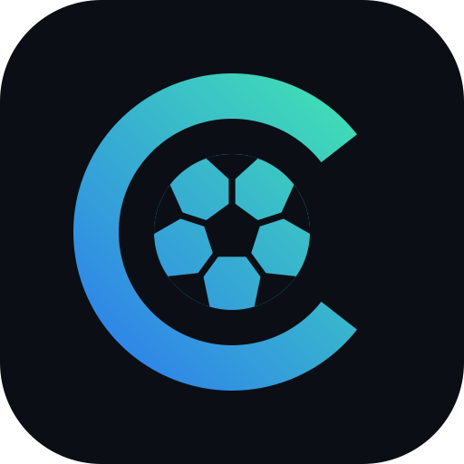

Cuarta tanda: más formas de combinar CP con el balón. Abajo de cada una, cómo se ve en tamaño de ícono.
La de la tanda anterior, para comparar.
La C es el recorrido del balón, que va en la punta.

Una C grande abrazando el balón. La que mejor se ve en chico.
La más sobria: el balón es solo el pentágono dentro de la P.
CP con balón dentro de un escudo de club.
CP con el balón como punto.
La G con el fondo en degradado y la marca oscura.